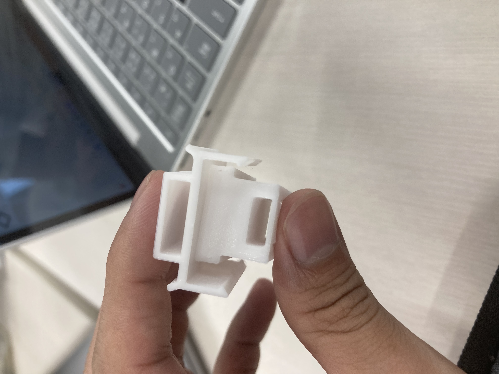
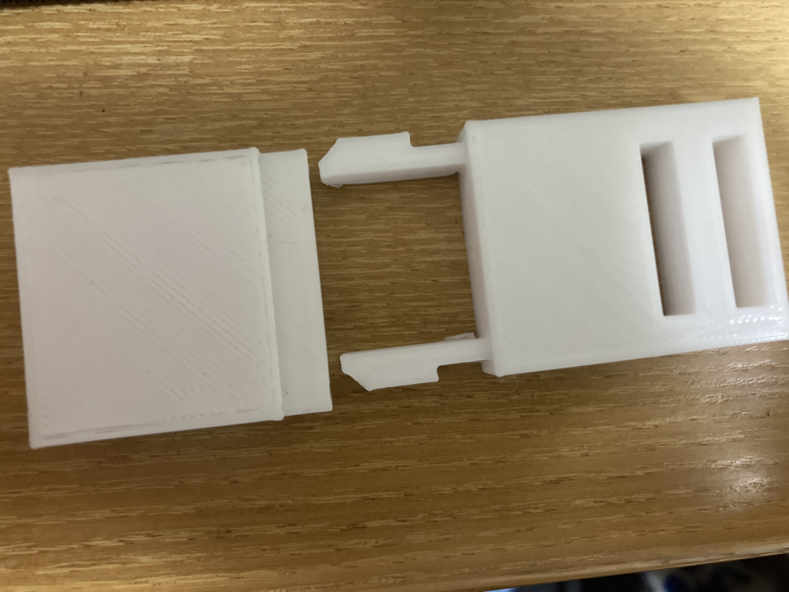

デザイン演習Ⅴ・Ⅵ
鎌倉プロジェクト
メンバー
ICカードをスマートに
こちらで更新中
ソテツ箒
ソテツという木がありその木を再利用できないかというところから始まり、
ソテツの硬さと葉の多さから箒にしてみようと言うところから始まりました。
このことから元のソテツを加工するのでなく、
そのままの形でソテツをかっこよく束ねてみようとなりました。

失敗作
これは大きさが合わず噛み合わせが悪くなってしまったものです。
他にもこのような形も作ってみました。

この場合はプラスチックが太すぎてプラスチックが曲がらないということになってしまいました。
今回の授業までには完成しなかったもののこれからも改良を続けて行こうと思います。